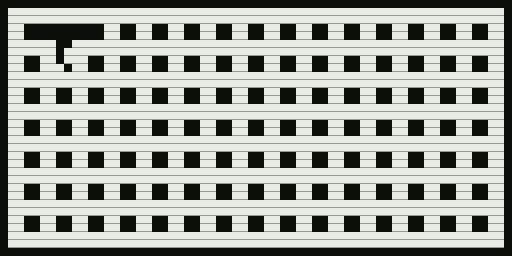
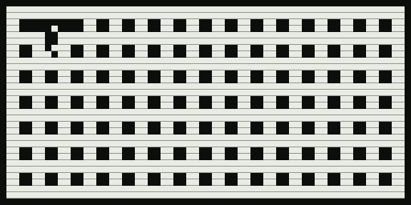

A-Maze-ing
Graeme V. Samways · DREAMER no. 13 (1981-09) p. 9 2K RAM



Draw a maze with the cursor, drop some food, then release a mouse at the entrance and watch it search for the food. Hold 3 to interrupt the search. When it finds the food, B repeats the same maze and F wipes the screen. The 'dead-end' data lives in 0400-05FF, so 2K are needed.
Keys
4/5/6/8/A/C/D/E move the cursor, 2 sets a wall, 0 drops food, 1 frees the mouse, 3 stops, B/F afterwards.
Files
| File | Version | Load | Run |
|---|---|---|---|
| A-Maze-ing.d68 | main | 0080-03FF | C000 |
Listing as transcribed (with notes): a_maze_ing.txt
Source
DREAMER no. 13 on archive.org, p. 9 (PDF page 11). Author: Graeme V. Samways.
Corrections applied
None.
Open doubts
- Key digits in 024A-0278 are overwritten by hand on the scan; the article's key table was used.
- 0294 = 76C2, perhaps 8AC2; kept.
- 03FE faint, read 13E2.
- Tested with the RAM size set to 1.